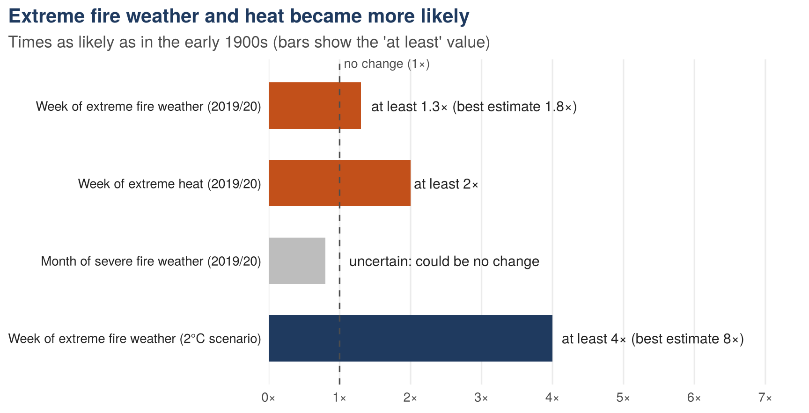
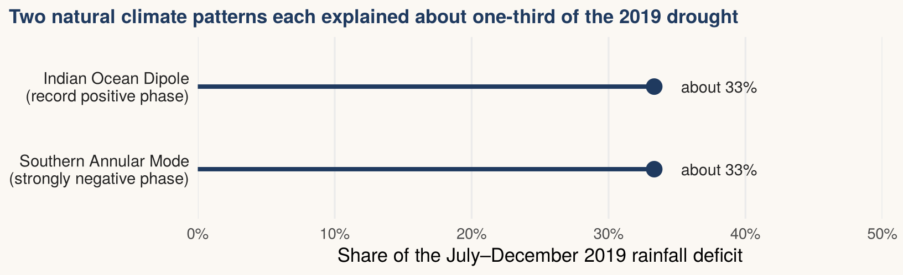

For people in bushfire-prone southeastern Australia, a major study found that climate change had made fire weather like Black Summer’s at least 30% more likely than in the early 1900s.
The question: has Black Summer’s fire weather become more likely?
The 2019/20 fire season brought weeks of smoke, closed roads and evacuation warnings across southeastern Australia. Fires spread fastest in hot, dry, windy weather, and scientists combine temperature, humidity, rainfall and wind into one score called the Fire Weather Index. The higher the score, the harder a fire is to control.
This matters because most households plan around the seasons they remember: when to clear gutters, how long to keep a fire plan ready, whether to stay or leave early. If weather like 2019/20 has become more likely, a plan based on past seasons will underestimate how often it is needed. This post answers three questions a resident might ask:
- Has fire weather as extreme as Black Summer’s become more likely?
- What is driving the change: heat or drought?
- What could happen as the climate keeps warming?
Where the evidence comes from
To answer these questions, I draw on a peer-reviewed study by an international team of climate scientists (van Oldenborgh et al. 2021). It covers the land between the Great Dividing Range and the coast in southeastern Australia, over the September–February fire season. The team compared weather records since 1979 from ERA5, a dataset that combines observations with a weather model (Hersbach et al. 2020), with computer simulations of the climate with and without the warming caused by people. The authors made their data and analysis scripts available through the KNMI Climate Explorer.
These estimates compare the climate around 2019/20 with that of the early 1900s. The figure and table below summarise estimates reported in the study; I have not reanalysed the underlying weather records.
What the evidence shows
Figure 1 answers questions 1 and 3 at a glance: any bar that reaches past the dashed line means that kind of weather has become more likely than in the early 1900s.
1. Yes: extreme fire-weather weeks became at least 30% more likely
In the 2019/20 climate, a week of fire weather as extreme as Black Summer’s was at least 1.3 times as likely as in the early 1900s, with a model best estimate of 1.8 times. Across the same number of comparable seasons, an event expected 10 times in the earlier climate would be expected at least 13 times in the 2019/20 climate. The weather records since 1979 suggest an even larger rise, but the authors treat that figure with caution because the record is short. Longer dangerous stretches are less certain: a month of severe fire weather was about twice as likely in the simulations, but the estimate is too uncertain to rule out no change.
The next question is what lies behind this rise.
2. Heat is the main driver; drought is less clear
A hot week like the one in December 2019 was at least twice as likely, and the study identifies rising temperature as the most important reason fire weather worsened. The simulations also tend to underestimate how fast extreme heat has risen in the real world, so the true increase in fire weather is probably larger than 30%.
Rainfall tells a different story. The study did not detect a climate-change trend in a very dry year or in the driest month of the fire season. Natural climate patterns played a large part in 2019, as Figure 2 shows. The Indian Ocean Dipole is a see-saw in sea temperatures between the western and eastern Indian Ocean; in 2019 it hit a record positive phase, which reduces rain over southeastern Australia. The Southern Annular Mode describes how far north the westerly winds around Antarctica sit; in 2019 it was strongly negative, which also brought dry conditions. The study reports that each explained about one-third of the drought between July and December.

So the dryness was real, but the study links it mainly to natural variability rather than to a climate-change trend. Heat, not drought, is the part of the risk that climate change has clearly shifted, which raises the third question: what happens as warming continues?
3. In a warmer climate, the risk could keep rising
In a scenario where global warming reaches 2°C above pre-industrial levels, fire weather like Black Summer’s becomes at least 4 times as likely as in the early 1900s. This comes from only two climate models, so it shows the direction of change rather than a forecast for any particular year.
Table 1 groups each result under the question it answers and says what it means in practice, so you can look up any single result without rereading the post.
| What was measured | What the study found | What it means |
|---|---|---|
| 1. Has extreme fire weather become more likely? | ||
| Week of extreme fire weather (2019/20) | At least 1.3× (30% more) | Severe fire-weather weeks were more likely than a century earlier. |
| Month of severe fire weather (2019/20) | About 2×, but uncertain | The estimate is too uncertain to rule out no change. |
| 2. What is driving it? | ||
| Week of extreme heat (2019/20) | At least 2× | Hotter weeks are the main reason fire weather worsened. |
| Very dry year, or driest month of the season | No climate-change trend detected | Natural climate patterns contributed strongly to the 2019 drought. |
| 3. What could happen with more warming? | ||
| Week of extreme fire weather (2°C scenario) | At least 4× | The risk is expected to grow if warming continues. |
| Bold orange: a clear increase. Grey italic: no trend detected or an uncertain result. | ||
What this evidence cannot tell you
These answers come with one important limit. They describe how likely dangerous weather is over a region, not whether a particular home will burn. Whether a fire starts, how it spreads and what it damages also depend on ignitions, vegetation, where homes are built and how well communities prepare. The study does not predict when the next severe season will come.
The answer: plan for a warmer climate
With that limit in mind, here are the answers to the three questions:
- Has extreme fire weather become more likely? Yes, by at least 30% in the 2019/20 climate, and probably more.
- What is driving it? Mainly heat. The study did not detect a climate-change trend in the drought measures it tested.
- What could happen next? In a 2°C-warmer world, that fire weather becomes at least four times as likely.
The study shows why planning in bushfire-prone southeastern Australia should account for a warmer climate, while recognising that these regional results cannot predict the risk to an individual home (van Oldenborgh et al. 2021).
References
Hersbach, Hans, Bill Bell, Paul Berrisford, et al. 2020. “The ERA5 Global Reanalysis.” Quarterly Journal of the Royal Meteorological Society 146 (730): 1999–2049. https://doi.org/10.1002/qj.3803.
Iannone, Richard, Joe Cheng, Barret Schloerke, Ellis Hughes, Alexandra Lauer, JooYoung Seo, Ken Brevoort, and Olivier Roy. 2024. Gt: Easily Create Presentation-Ready Display Tables. https://gt.rstudio.com.
van Oldenborgh, Geert Jan, Folmer Krikken, Sophie Lewis, Nicholas J. Leach, Flavio Lehner, Kate R. Saunders, Michiel van Weele, et al. 2021. “Attribution of the Australian Bushfire Risk to Anthropogenic Climate Change.” Natural Hazards and Earth System Sciences 21 (3): 941–60. https://doi.org/10.5194/nhess-21-941-2021.
Wickham, Hadley, Mara Averick, Jennifer Bryan, Winston Chang, Lucy D’Agostino McGowan, Romain François, Garrett Grolemund, et al. 2019. “Welcome to the tidyverse.” Journal of Open Source Software 4 (43): 1686. https://doi.org/10.21105/joss.01686.
The figures and table were made in R with the tidyverse (Wickham et al. 2019) and gt (Iannone et al. 2024).